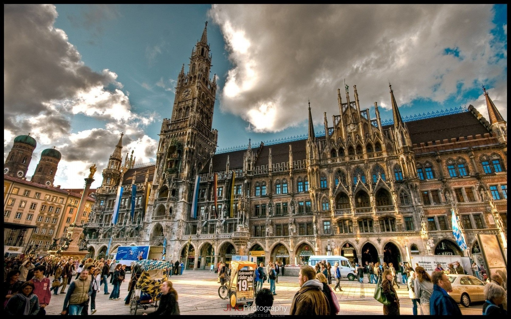

Дата і місце народження: 8 листопада 2005 року, м. Черкаси.
Освіта: Звенигородський ЗЗСО ім. Тараса Шевченка;
НТУУ «КПІ ім. Ігоря Сікорського».
Мюнхен - це столиця Баварії, однієї з найбільших і найзаможніших федеральних земель Німеччини. Це місто вражає своєю історичною архітектурою, яка гармонійно поєднується з сучасними будівлями та інфраструктурою. Крім того, Мюнхен є батьківщиною відомого пивного фестивалю Октоберфест, який щорічно збирає мільйони відвідувачів з усього світу. Тут можна насолодитися традиційною баварською кухнею, затишною атмосферою пивних садів та веселою музикою.
